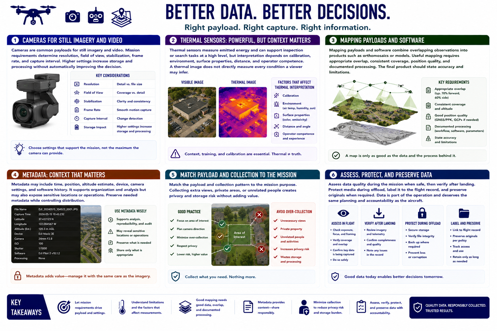

Payloads and Data Collection
Connecting to LMS... Progress: in progress

Narration
Cameras are common payloads for still imagery and video. Mission requirements determine resolution, field of view, stabilization, frame rate, and capture interval. Higher settings increase storage and processing without automatically improving the decision.
Thermal sensors measure emitted energy and can support inspection or search tasks at a high level, but interpretation depends on calibration, environment, surface properties, distance, and operator competence. A thermal image does not directly measure every condition a viewer may infer.
Mapping payloads and software combine overlapping observations into products such as orthomosaics or models. Useful mapping requires appropriate overlap, consistent coverage, position quality, and documented processing. The final product should state accuracy and limitations.
Metadata may include time, position, altitude estimate, device, camera settings, and software history. It supports organization and analysis but may also expose sensitive locations or operations. Preserve needed metadata while controlling distribution.
Match the payload and collection pattern to the mission purpose. Collecting extra views, private areas, or unrelated people creates privacy and storage risk without adding value. Plan camera direction, flight path, and retention to minimize unnecessary capture.
Assess data quality during the mission when safe, then verify after landing. Protect media during offload, label it to the flight record, and preserve originals when required. Data is part of the operation and deserves the same planning and accountability as the aircraft.